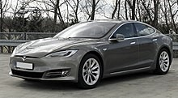
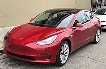
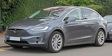
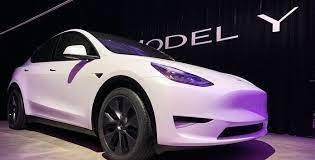
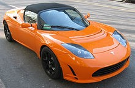
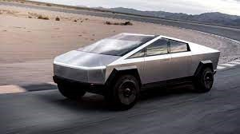

TESTLA
Tesla, Inc. (antigamente Tesla Motors, Inc.), é uma empresa automotiva e de armazenamento de energia norte americana, que desenvolve, produz e vende automóveis elétricos de alto desempenho, componentes para motores e transmissões para veículos elétricos e produtos à base de baterias.
A sede atual da Tesla é em Palo Alto, em Silicon Valley, na Califórnia.
Existem planos de mudar a sede para Austin, Texas
Modelos
Model S
O Model S é um sedan esportivo elétrico produzido pela Tesla e foi lançado nos Estados Unidos em junho de 2012.
Model 3
Chegou a chamar-se Tesla Model E, porém depois de uma disputa com a Ford pelo nome acabou por se chamar Tesla Model 3. O Model 3 foi revelado no dia 31 de março de 2016, num evento organizado pela Tesla em Hawthorne, Califórnia.
Model X
O Tesla Model X é o primeiro SUV da Tesla. O carro foi apresentado em 2012, mas só em setembro de 2015 é que começou a ser produzido.
Model Y
Em 2019, a Tesla apresentou o Model Y, um SUV de tamanho médio com espaço para até sete pessoas
Tesla Roadster
O Tesla Roadster foi um carro elétrico do tipo esportivo, o primeiro produzido pela Tesla
Cybertruck
O Tesla Cybertruck é uma picape leve, totalmente elétrico, movido a bateria, anunciado pela Tesla, Inc
